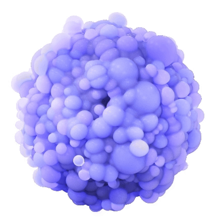
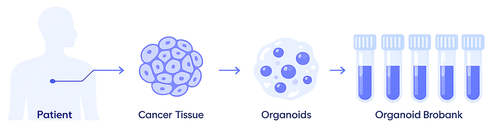
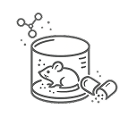
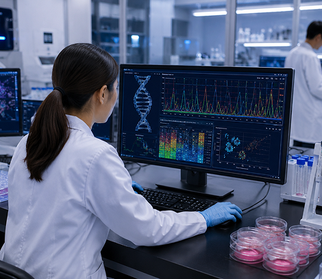

Precision Drug Screening with
Patient-Derived Organoids
삼성바이오로직스는 환자 유래 오가노이드 기반의 정밀 스크리닝 플랫폼을 통해 초기 신약 발굴부터 후보물질
평가까지 빠르고 안정적인 연구 서비스를 제공합니다.
실제 암 조직의 특성을 반영한 3D 오가노이드 모델과 데이터 기반 분석 시스템을 활용하여 신약 후보물질의 효능과
반응성을 정밀하게 검증합니다.

About Samsung Organoids
환자 유래 오가노이드 기반 정밀 연구 플랫폼
오가노이드는 환자의 암 조직 특성을 반영한 3차원 종양 모델로, 기존 세포 기반 연구보다 높은 예측력과 임상 신뢰도를 제공합니다.
삼성바이오로직스는 대장암, 폐암, 간암, 위암, 유방암 등 다양한 암종 기반의 오가노이드 모델을 활용해 후보물질 스크리닝 및 약효 평가 서비스를 지원합니다.

About Samsung Organoids
초기 발굴부터 임상 단계까지 이어지는 연구 지원
Samsung Organoids는 연구 단계부터 임상 적용까지 신약 개발 전 과정에서 고객의 성공적인 연구 여정을 지원합니다.
Step 01
Research & Discovery
타깃 발굴 및 검증
질환 기반 오가노이드 모델 개발
선도물질 식별 및 효능 평가
Step 02

Preclinical Development
비임상 개발 지원
바이오마커 발굴
멀티모달 데이터 기반 후보물질 분석
Step 03
Clinical Support
환자군 선별 정밀화
치료 적응증 확대 지원
임상 성공 가능성 향상
Key Features
신약 개발 속도를 높이는 삼성 오가노이드 플랫폼
Customized Organoid Models
치료 타깃 및 개발 단계에 최적화된 맞춤형
오가노이드 모델 제공

Advanced Screening & Analytics
WES, RNA Sequencing, 환자 매칭 데이터 기반의
정밀 분석 및 약물 스크리닝 지원